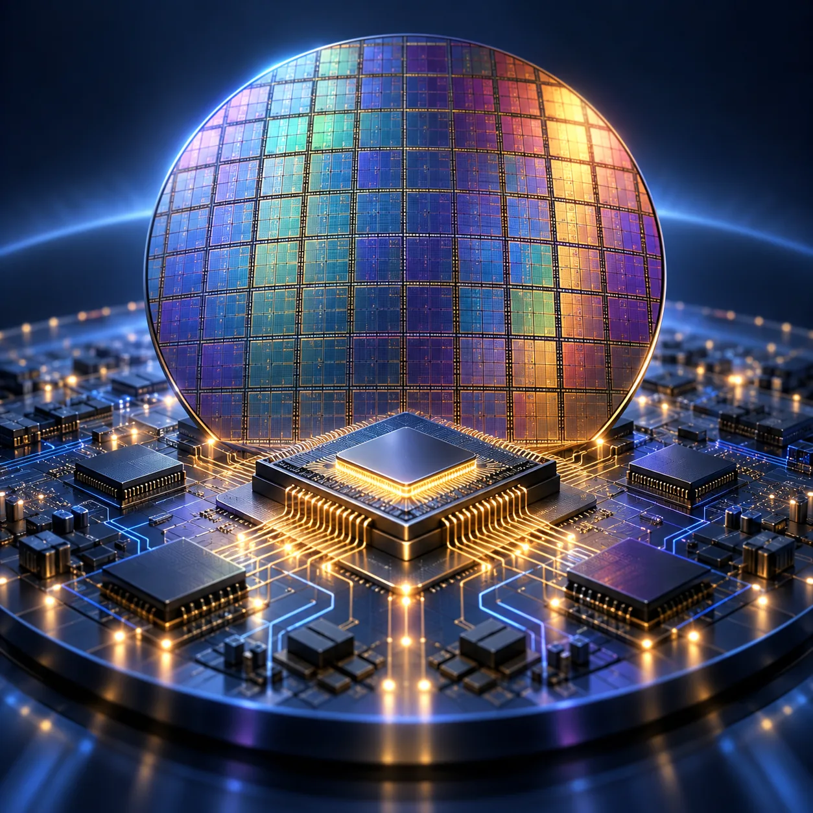

Intelligence
Artificial Intelligence
Understand autonomous systems, machine reasoning and the changing relationship between people and AI.
Explore AI Resources →ASARK Knowledge Hub
Discover carefully selected guides, tools, references, journals, visual explainers and learning resources across ASARK’s technology categories.
Explore the libraryExplore by field
Enter a focused collection of ASARK articles, visual stories and explainers for each field.
Intelligence
Understand autonomous systems, machine reasoning and the changing relationship between people and AI.
Explore AI Resources →
Computing
Explore chip architecture, fabrication, design flows and the foundations of modern computing.
Explore Semiconductor Resources →Exploration
Follow orbital infrastructure, satellite systems and the engineering opening new frontiers.
Explore Space Resources →Systems
See how data, automation and global networks reshape markets and economic systems.
Explore Market Resources →Mobility
Discover electric platforms, intelligent transport and the technology transforming movement.
Explore Vehicle Resources →Creativity
Explore the tools, techniques and visual systems behind contemporary digital storytelling.
Explore Animation Resources →Design
Consider the materials, environments and design ideas shaping how tomorrow will look and feel.
Explore Architecture Resources →Choose your path
From ASARK
Go deeper with foundational guides and forward-looking technology analysis.
Inside the chip
ASARK conceptual artwork exploring fabrication, integrated circuits, wafer testing and emerging computing architectures.
Practical collection
A focused collection of practical resources for reading, creating, building and working with more intention.
Learn
Build context before buying the next device, tool or subscription.
Shop Technology BooksCreate
Useful tools for sketching, digital art, animation and visual exploration.
Shop Drawing TabletsBuild
Thoughtful desk hardware for a focused, capable working environment.
Explore Workspace IdeasExplore
Accessible resources for deeper curiosity about science, space and engineering.
Shop Space BooksASARK App
Read ASARK on your Android device with the official APK.
Download the Android AppAs an Amazon Associate I earn from qualifying purchases. Purchases made through these links may support ASARK at no additional cost to you.